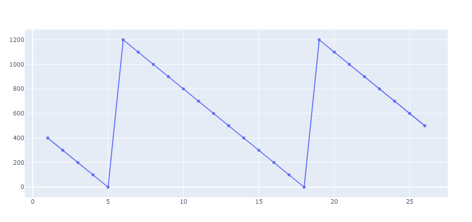

Inventory Movements
Network optimization is mainly about long term inventory flows. In this example we will show to use SupplyChainOptimization to compute shorter term inventory movements and optimal ordering.
We will consider a simple network with one supplier, one storage location, one customer and a single product. The storage location must maintain enough inventory to meet the customer's demand for the product. The storage location can order inventory from the supplier. Each time it orders it pays an ordering cost. The storage location also pays a holding cost for any inventory left at the end of each time period. We want to find the best way to order inventory into the storage location. We consider a problem over 26 periods (this would be 6 months if each period represents weekly demand).
The problem is modeled and solved as shown below.
using HiGHS
using JuMP
using SupplyChainOptimization
Seattle = Location(47.608013, -122.335167)
sc = SupplyChain(26)
ordering_cost = 100
product = Product("Product 1"; unit_holding_cost=0.01)
add_product!(sc, product)
supplier = Supplier("Supplier 1", Seattle)
add_product!(supplier, product; unit_cost=0.0)
add_supplier!(sc, supplier)
storage = Storage("Storage 1", Seattle;
fixed_cost= 0,
initial_opened=true)
add_product!(storage, product; additional_stock_cover=0, initial_inventory=nothing)
add_storage!(sc, storage)
customer = Customer("Customer 1", Seattle)
add_customer!(sc, customer)
add_demand!(sc, customer, product; demand=[100.0 for i in 1:sc.horizon])
lane = Lane(supplier, storage; minimum_quantity=1.0)
add_lane!(sc, lane)
add_lane!(sc, Lane(storage, customer; minimum_quantity=1.0))
SupplyChainOptimization.create_network_optimization_model!(sc, HiGHS.Optimizer)
@objective(sc.optimization_model, Min, sum(sc.optimization_model[:used][lane, t] * ordering_cost for t in 1:sc.horizon) +
sum(sc.optimization_model[:stored_at_start][product, storage, t] * product.unit_holding_cost for t in 1:sc.horizon) )
SupplyChainOptimization.optimize_network_optimization_model!(sc)0% 13986190.19234 87742807.66221 84.06% 6826 579 0 965 1.4s
S 0 0 0 0.00% 14418422.4637 85008430.43182 83.04% 7630 639 0 1029 1.5s
S 0 0 0 0.00% 16837933.55554 84017694.58994 79.96% 10286 814 0 1232 2.1s
S 0 0 0 0.00% 18744288.32916 81462972.44722 76.99% 11029 930 0 1373 2.6s
S 0 0 0 0.00% 22834970.49606 81425114.01991 71.96% 11610 1497 0 2071 5.0s
S 0 0 0 0.00% 24078802.3765 77187311.06536 68.80% 11967 1705 0 2344 6.3s
S 0 0 0 0.00% 24171078.12954 74941704.73423 67.75% 11470 1726 0 2371 6.5s
S 0 0 0 0.00% 24225871.102 71458535.85262 66.10% 11809 1743 0 2394 6.6s
S 0 0 0 0.00% 24589023.79534 60473164.42502 59.34% 11949 1850 0 2575 7.1s
S 0 0 0 0.00% 24758957.1321 55874286.90037 55.69% 12103 1892 0 2659 7.6s
S 0 0 0 0.00% 24783884.94637 53465052.41444 53.64% 10846 1897 0 2700 7.7s
S 0 0 0 0.00% 25512735.12634 34884898.60282 26.87% 11854 2009 0 2992 9.0s
Nodes | B&B Tree | Objective Bounds | Dynamic Constraints | Work
Proc. InQueue | Leaves Expl. | BestBound BestSol Gap | Cuts InLp Confl. | LpIters Time
L 0 0 0 0.00% 25583793.79267 25592017.83734 0.03% 11977 2015 0 3114 9.8s
Solving report
Status Optimal
Primal bound 25592017.8373
Dual bound 25592017.8373
Solution status feasible
25592017.8373 (objective)
3.25931839279e-17 (bound viol.)
3.25931839279e-17 (int. viol.)
1.86264514923e-09 (row viol.)
Timing 10.52 (total)
0.12 (presolve)
0.00 (postsolve)
Nodes 1
LP iterations 3411 (total)
34 (strong br.)
2712 (separation)
233 (heuristics)
Presolving model
79 rows, 79 cols, 184 nonzeros
53 rows, 53 cols, 157 nonzeros
51 rows, 52 cols, 153 nonzeros
Solving MIP model with:
51 rows
52 cols (26 binary, 0 integer, 0 implied int., 26 continuous)
153 nonzeros
( 0.0s) Starting symmetry detection
( 0.0s) No symmetry present
Solving root node LP relaxation
Nodes | B&B Tree | Objective Bounds | Dynamic Constraints | Work
Proc. InQueue | Leaves Expl. | BestBound BestSol Gap | Cuts InLp Confl. | LpIters Time
0 0 0 0.00% 2.6 inf inf 0 0 0 26 0.0s
R 0 0 0 0.00% 28.574 425 93.28% 26 26 0 52 0.0s
L 0 0 0 0.00% 345.6227666 356 2.91% 435 53 0 261 0.1s
B 0 0 0 0.00% 345.6227666 356 2.91% 388 35 0 408 0.2s
B 41 5 17 87.05% 346.4678911 356 2.68% 330 43 32 3439 0.3s
T 54 3 26 87.38% 346.4678911 356 2.68% 283 49 37 4488 0.3s
Solving report
Status Optimal
Primal bound 356
Dual bound 356
Solution status feasible
356 (objective)
1.72803993337e-11 (bound viol.)
1.25055521494e-14 (int. viol.)
1.2332748156e-09 (row viol.)
Timing 0.57 (total)
0.00 (presolve)Once solve we can display the inventory at the storage location.
plot_inventory(sc, storage, product)